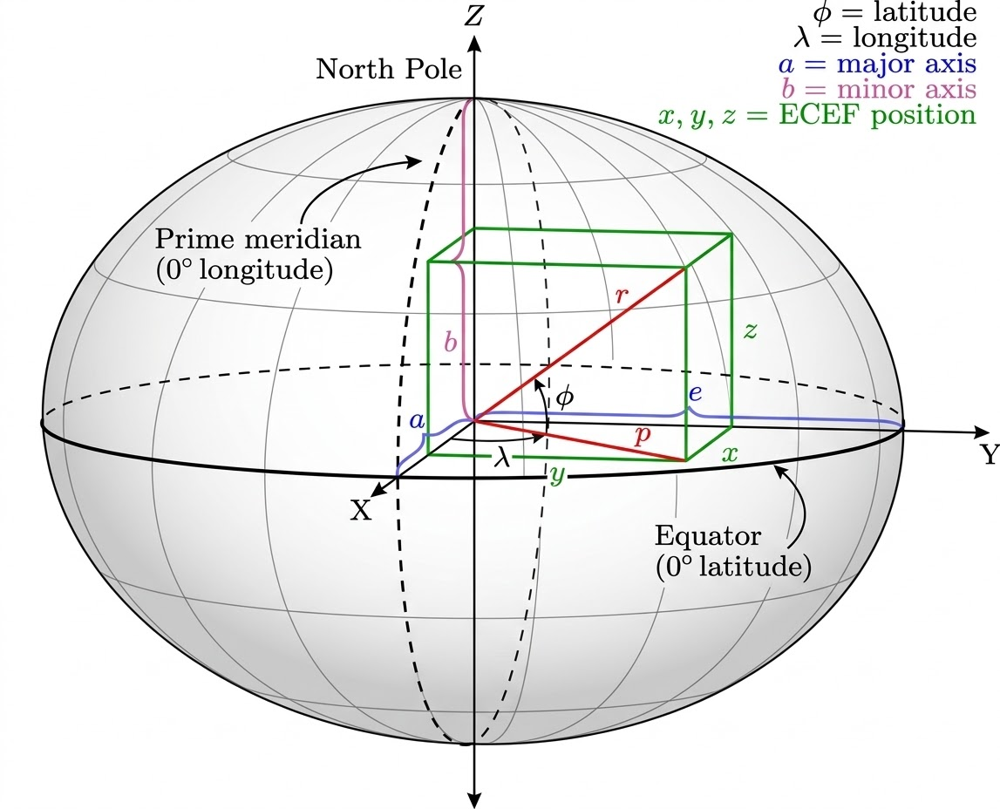
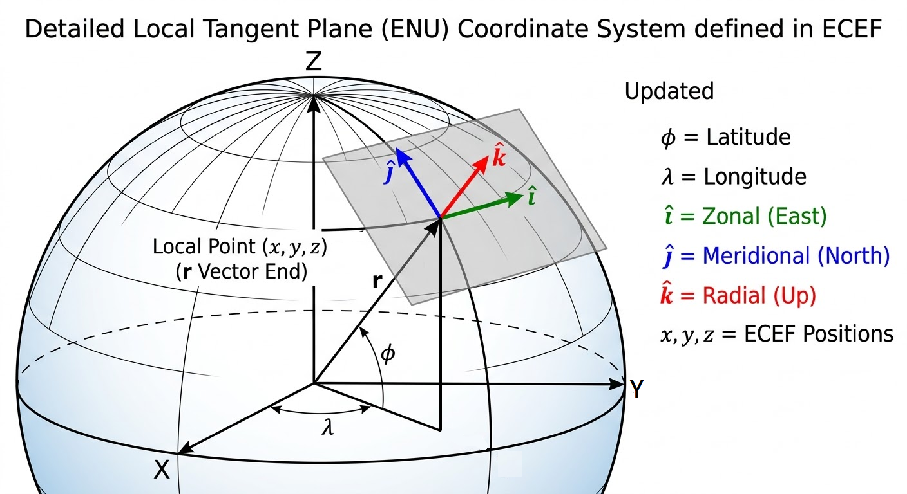
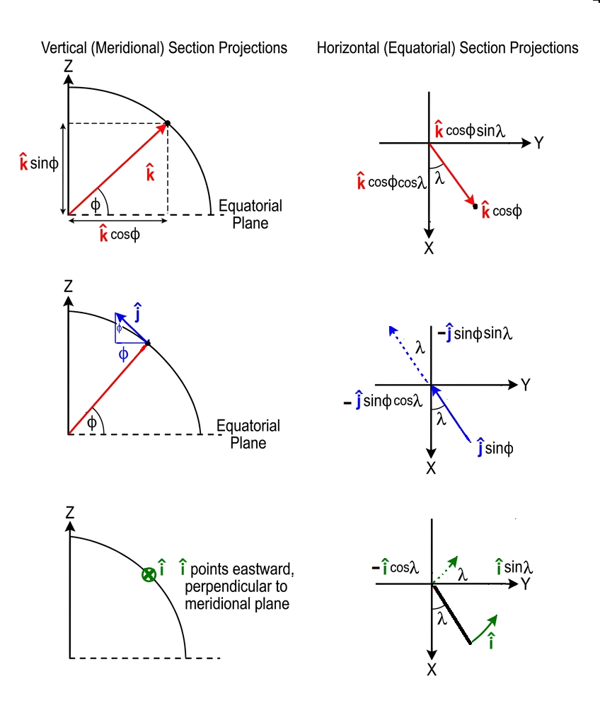

目標
將動量方程式
\[
\frac{D \vec{V}}{D t} + f\hat{k}\times \vec{V} = -\frac{1}{\rho}\nabla P - g\hat{k} + \text{Friction}
\]
寫在球面座標系 \(( \lambda, \phi, R)\)
\[\begin{split}
\begin{aligned}
\text{[u 緯向]} \quad &\frac{Du}{Dt} + \left( 2\Omega + \frac{u}{R \cos\phi} \right)(w \cos\phi - v \sin\phi) = -\frac{1}{\rho R \cos\phi} \frac{\partial P}{\partial \lambda} + \text{RHS}_{\hat{i}} \\
\text{[v 經向]} \quad &\frac{Dv}{Dt} + \left( 2\Omega + \frac{u}{R \cos\phi} \right) u \sin\phi + \frac{vw}{R} = -\frac{1}{\rho R} \frac{\partial P}{\partial \phi} + \text{RHS}_{\hat{j}} \\
\text{[w 垂直]} \quad &\frac{Dw}{Dt} - \left( 2\Omega + \frac{u}{R \cos\phi} \right) u \cos\phi - \frac{v^2}{R} = -\frac{1}{\rho} \frac{\partial P}{\partial R} - g + \text{RHS}_{\hat{k}}
\end{aligned}
\end{split}\]
操作流程
推導方法的標準作業流程（SOP）流程圖：
[Step 1] 定義全域常數 (Global Constants)
👉 在太空中建立絕對不會動的直角參考座標系 \((\hat{I}, \hat{J}, \hat{K})\)。
[Step 2] 實作局部物件 (Local Basis Objects)
👉 將地表會旋轉的局部基底向量 \((\hat{i}, \hat{j}, \hat{k})\)，用經緯度 \((\lambda, \phi)\) 投影到絕對座標系上（建立 Mapping）。
[Step 3] 呼叫時間導數方法 (Chain Rule)
👉 計算 \(\frac{D\hat{i}}{Dt}, \frac{D\hat{j}}{Dt}, \frac{D\hat{k}}{Dt}\)。利用微積分連鎖律，求出基底向量隨流體移動（\(\lambda, \phi\) 改變）時互相轉換的「旋轉變化量」。
[Step 4] 執行總速度展開 (Product Rule)
👉 對總速度 \(\vec{V} = u\hat{i} + v\hat{j} + w\hat{k}\) 執行全質導數 \(\frac{D\vec{V}}{Dt}\)：
套用公式 \(\rightarrow\) (純量加速度 * 基底向量) + (純量速度 * 基底向量的時間導數)。
[Step 5] 靠慮其他外力(科氏力)
👉 「科氏力」這個獨立的物理量算出來，然後跟[Step 4]算出來的「總加速度（包含度量項）」
[Step 1] 定義全域常數 (Global Constants)：建立絕對直角參考座標系
流體質塊在地表上移動時，它的「東、北、上」每走一步都在改變，如果我們要對這些會變動的局部向量（\(\hat{i}, \hat{j}, \hat{k}\)）進行微積分，我們必須先架設一個 「上帝視角」 ——一個絕對不會因為經緯度改變而彎曲、旋轉的框架。
這就是我們現在要建立的全域直角座標系 \((\hat{I}, \hat{J}, \hat{K})\)。在大氣科學與地球物理中，我們通常將它定義為 ECEF (Earth-Centered, Earth-Fixed) 座標系。
1. 座標系的幾何定義 (The Setup)
我們將原點 \((0,0,0)\) 釘在地球的球心。接著，伸出三根互相垂直且筆直的軸：
\(\hat{K}\) (Z-axis)：從地心出發，貫穿北極點 (North Pole)。這條軸剛好是地球的自轉軸方向。
\(\hat{I}\) (X-axis)：從地心出發，貫穿赤道與本初子午線 (Prime Meridian, 經度 \(\lambda = 0\)) 的交點。
\(\hat{J}\) (Y-axis)：從地心出發，貫穿赤道與東經 90 度 (\(\lambda = \pi/2\)) 的交點。

2. 核心數學性質 (The Mathematical Property)
因為這三根軸是筆直地穿出地球，無論流體質塊今天是在台灣還是飛到了紐約，這三根軸的方向在相對於地球的空間中永遠不會改變。
因此，它們的全質導數（時間變化率）嚴格為零：
\[
\frac{D \hat{I}}{Dt} = 0, \quad \frac{D \hat{J}}{Dt} = 0, \quad \frac{D \hat{K}}{Dt} = 0
\]
老師的特別提醒（物理意義）：
為什麼我們要把它固定在地球上（Earth-Fixed），而不是固定在遙遠的太空中？
因為在我們的大氣動力方程式 \(\frac{D \vec{V}}{Dt} + 2\vec{\Omega} \times \vec{V} = -\frac{1}{\rho}\nabla P\) 已經有 \(2\vec{\Omega} \times \vec{V}\) 這個科氏力項了，這個科氏力項已經幫我們處理了「地球自轉」帶來的假力。因此，我們的座標系 \((\hat{I}, \hat{J}, \hat{K})\) 只需要跟著地球一起轉就好，我們後續計算的 \(\frac{D}{Dt}\) 都是 「相對於地表」 的變化，這樣可以完美分離出「科氏力」與「幾何曲率產生的度量項」！
[Step 2] 實作局部物件 (Local Basis Objects)
我們的目標是把局部的 \((\hat{i}, \hat{j}, \hat{k})\) 寫成絕對座標 \((\hat{I}, \hat{J}, \hat{K})\) 的線性組合。為了推導嚴謹，我們從最直觀的「正上方」開始。

1. 定義 \(\hat{k}\) (正上方 / Radial direction)
流體質塊的位置向量 \(\vec{r}\) 是從地心出發，指向地表。這個方向剛好就是 \(\hat{k}\) 的方向。
我們先看它在赤道面上的投影：長度是 \(\cos\phi\)。
這個赤道面上的投影，又可以依據經度 \(\lambda\) 分解到 X 軸 (\(\hat{I}\)) 和 Y 軸 (\(\hat{J}\))：
最後，它在 Z 軸 (\(\hat{K}\)) 的垂直分量就是 \(\sin\phi\)。
組合起來，我們得到第一個局部物件：
\[\hat{k} = \cos\phi \cos\lambda \hat{I} + \cos\phi \sin\lambda \hat{J} + \sin\phi \hat{K}\]
(物理意義：這是流體質塊對抗地心引力的方向。)
2. 定義 \(\hat{j}\) (正北方 / Meridional direction)
\(\hat{j}\) 是沿著經線（Longitude circle）指向北極的切線方向。
在微積分幾何中，要找切線方向，就是把位置向量（或 \(\hat{k}\)）對著緯度 \(\phi\) 微分！
因為當你往北走，你的角度 \(\phi\) 在增加，這時的變化率方向就是正北方。
我們直接對剛剛寫出來的 \(\hat{k}\) 取偏微分 \(\frac{\partial}{\partial \phi}\)：
\(\frac{\partial}{\partial \phi} (\cos\phi \cos\lambda) = -\sin\phi \cos\lambda\)
\(\frac{\partial}{\partial \phi} (\cos\phi \sin\lambda) = -\sin\phi \sin\lambda\)
\(\frac{\partial}{\partial \phi} (\sin\phi) = \cos\phi\)
組合起來，我們完美得到第二個局部物件：
\[\hat{j} = -\sin\phi \cos\lambda \hat{I} - \sin\phi \sin\lambda \hat{J} + \cos\phi \hat{K}\]
(物理意義：這個向量告訴流體，往北極點走應該朝哪個絕對方向前進。)
3. 定義 \(\hat{i}\) (正東方 / Zonal direction)
\(\hat{i}\) 是沿著緯線圈（Latitude circle）指向東方的切線方向。
要找東方，我們要看的是當經度 \(\lambda\) 增加時的變化方向。因為正東方是一個水平向量，它完全沒有垂直向上的分量，所以它在 \(\hat{K}\) 軸上的投影一定是 0。
我們可以直接觀察赤道面上的旋轉。指向外側的水平向量是 \((\cos\lambda \hat{I} + \sin\lambda \hat{J})\)，將它逆時針旋轉 90 度（或者是對 \(\lambda\) 微分再單位化），就會得到指向切線正東方的向量：
所以第三個局部物件是：
$\(\hat{i} = -\sin\lambda \hat{I} + \cos\lambda \hat{J}\)\(
*(物理意義：這個向量完全不受緯度 \)\phi$ 影響，因為不管你在哪個緯度，正東方永遠平行於赤道面！)*

\[\begin{split}\begin{aligned}
\hat{i} &=& -\sin\lambda \hat{I} &+& \cos\lambda \hat{J}&&\\
\hat{j} &=& -\sin\phi \cos\lambda \hat{I} &-& \sin\phi \sin\lambda \hat{J} &+& \cos\phi \hat{K}\\
\hat{k} &=& \cos\phi \cos\lambda \hat{I} &+& \cos\phi \sin\lambda \hat{J} &+& \sin\phi \hat{K}
\end{aligned}\end{split}\]
或者經過一點觀察 \(\mathbf{R}^{-1} = \mathbf{R}^T\) 可以得到
\[\begin{split}\begin{bmatrix}
\hat{I} \\
\hat{J} \\
\hat{K}
\end{bmatrix}
=
\begin{bmatrix}
-\sin\lambda & -\sin\phi\cos\lambda & \cos\phi\cos\lambda \\
\cos\lambda & -\sin\phi\sin\lambda & \cos\phi\sin\lambda \\
0 & \cos\phi & \sin\phi
\end{bmatrix}
\begin{bmatrix}
\hat{i} \\
\hat{j} \\
\hat{k}
\end{bmatrix}\end{split}\]
[Step 3] 呼叫時間導數方法 (Chain Rule)
定理：全質導數的連鎖律
對於任何依賴於空間位置 \((\lambda, \phi, R )\) 的向量 \(\hat{e}\)，當質塊隨流體移動時，其全質導數可以展開為：
\[\frac{D\hat{e}}{Dt} = \frac{\partial \hat{e}}{\partial \lambda} \frac{D\lambda}{Dt} + \frac{\partial \hat{e}}{\partial \phi} \frac{D\phi}{Dt} + \frac{\partial \hat{e}}{\partial R} \frac{D R}{Dt}\]
(物理翻譯：向量隨時間的改變 ＝ 往東走造成的幾何旋轉 ＋ 往北走造成的幾何旋轉)
定義角速度：
我們已知流體往東的速度是 \(u\)，往北的速度是 \(v\)，在半徑為 \(R\) 的地球上：
經度改變率 (往東的角速度)：\(\frac{D\lambda}{Dt} = \frac{u}{R \cos\phi}\) (注意要除以 \(\cos\phi\)，因為高緯度的緯線圈比較小)
緯度改變率 (往北的角速度)：\(\frac{D\phi}{Dt} = \frac{v}{R}\)
我們把 [Step 2] 寫好的三個局部向量偏微分！
1. 計算 \(\frac{D\hat{i}}{Dt}\) (向東向量的時間導數)
\[\begin{split}\begin{gather*}
\frac{D\hat{i}}{Dt} &=& \frac{\partial \hat{i}}{\partial \lambda} \frac{D\lambda}{Dt} + \frac{\partial \hat{i}}{\partial \phi} \frac{D\phi}{Dt} + \frac{\partial \hat{i}}{\partial R} \frac{D R}{Dt} \\
&=& \frac{\partial }{\partial \lambda}\left[-\sin\lambda \hat{I} + \cos\lambda \hat{J}\right] \frac{D\lambda}{Dt} + \frac{\partial }{\partial \phi} \left[-\sin\lambda \hat{I} + \cos\lambda \hat{J}\right] \frac{D\phi}{Dt} + \frac{\partial }{\partial R} \left[-\sin\lambda \hat{I} + \cos\lambda \hat{J}\right] \frac{D R}{Dt}\\
&=& (-\cos\lambda \hat{I} - \sin\lambda \hat{J}) \frac{D\lambda}{Dt} + 0 \frac{D\phi}{Dt} + 0 \frac{D R}{Dt}\\
&=& \left(-\cos\lambda (-\sin\lambda \hat{i} -\sin\phi\cos\lambda \hat{j}+ \cos\phi\cos\lambda \hat{k}) - \sin\lambda (\cos\lambda \hat{i} -\sin\phi\sin\lambda \hat{j} + \cos\phi\sin\lambda\hat{k}) \right)\frac{D\lambda}{Dt} \\
&=& \left((\cos\lambda \sin\lambda - \sin\lambda \cos\lambda )\hat{i} +
( \cos\lambda \sin\phi\cos\lambda + \sin\lambda \sin\phi\sin\lambda )\hat{j} +
(-\cos\lambda \cos\phi\cos\lambda - \sin\lambda \cos\phi\sin\lambda )\hat{k} \right)\frac{D\lambda}{Dt} \\
&=& (\sin\phi \hat{j} - \cos\phi \hat{k}) \frac{D\lambda}{Dt} \\
&=&(\sin\phi \hat{j} - \cos\phi \hat{k}) \left( \frac{u}{R \cos\phi} \right) \\
&=&\frac{u \tan\phi}{R} \hat{j} - \frac{u}{R} \hat{k}
\end{gather*}\end{split}\]
2. 計算 \(\frac{D\hat{j}}{Dt}\) (向北向量的時間導數)
\[\begin{split}\begin{gather*}
\frac{D\hat{j}}{Dt} &=& \frac{\partial \hat{j}}{\partial \lambda} \frac{D\lambda}{Dt} + \frac{\partial \hat{j}}{\partial \phi} \frac{D\phi}{Dt} + \frac{\partial \hat{j}}{\partial R} \frac{DR}{Dt} \\
&=& \frac{\partial }{\partial \lambda}\left[-\sin\phi \cos\lambda \hat{I} - \sin\phi \sin\lambda \hat{J} + \cos\phi \hat{K}\right] \frac{D\lambda}{Dt} + \frac{\partial }{\partial \phi} \left[-\sin\phi \cos\lambda \hat{I} - \sin\phi \sin\lambda \hat{J} + \cos\phi \hat{K}\right] \frac{D\phi}{Dt} + \frac{\partial }{\partial R} \left[-\sin\phi \cos\lambda \hat{I} - \sin\phi \sin\lambda \hat{J} + \cos\phi \hat{K}\right] \frac{DR}{Dt}\\
&=& (\sin\phi \sin\lambda \hat{I} - \sin\phi \cos\lambda \hat{J}) \frac{D\lambda}{Dt} + ( -\cos\phi \cos\lambda \hat{I} - \cos\phi \sin\lambda \hat{J} - \sin\phi \hat{K}) \frac{D\phi}{Dt} + 0 \frac{DR}{Dt}\\
&=& -\sin\phi (-\sin\lambda \hat{I} +\cos\lambda \hat{J})\frac{D\lambda}{Dt} - ( \cos\phi \cos\lambda \hat{I} + \cos\phi \sin\lambda \hat{J} + \sin\phi \hat{K}) \frac{D\phi}{Dt} \\
&=& -\sin\phi \hat{i}\frac{D\lambda}{Dt} - \hat{k} \frac{D\phi}{Dt} \\
&=& (-\sin\phi \hat{i}) \left( \frac{u}{R \cos\phi} \right) + (-\hat{k}) \left( \frac{v}{R} \right) \\
&=& -\frac{u \tan\phi}{R} \hat{i} - \frac{v}{R} \hat{k}
\end{gather*}\end{split}\]
3. 計算 \(\frac{D\hat{k}}{Dt}\) (向上向量的時間導數)
\[\begin{split}\begin{gather*}
\frac{D\hat{k}}{Dt} &=& \frac{\partial \hat{k}}{\partial \lambda} \frac{D\lambda}{Dt} + \frac{\partial \hat{k}}{\partial \phi} \frac{D\phi}{Dt} + \frac{\partial \hat{k}}{\partial R} \frac{D R}{Dt} \\
&=& \frac{\partial }{\partial \lambda}\left[\cos\phi \cos\lambda \hat{I} + \cos\phi \sin\lambda \hat{J} + \sin\phi \hat{K}\right] \frac{D\lambda}{Dt} + \frac{\partial }{\partial \phi} \left[ \cos\phi \cos\lambda \hat{I} + \cos\phi \sin\lambda \hat{J} + \sin\phi \hat{K} \right] \frac{D\phi}{Dt} + \frac{\partial }{\partial R} \left[ \cos\phi \cos\lambda \hat{I} + \cos\phi \sin\lambda \hat{J} + \sin\phi \hat{K} \right] \frac{D R}{Dt}\\
&=& (-\cos\phi \sin\lambda \hat{I} + \cos\phi \cos\lambda \hat{J}) \frac{D\lambda}{Dt} + ( -\sin\phi \cos\lambda \hat{I} - \sin\phi \sin\lambda \hat{J} + \cos\phi \hat{K}) \frac{D\phi}{Dt} + 0 \frac{D R}{Dt}\\
&=& \cos\phi (-\sin\lambda \hat{I} + \cos\lambda \hat{J})\frac{D\lambda}{Dt} + ( -\sin\phi \cos\lambda \hat{I} - \sin\phi \sin\lambda \hat{J} + \cos\phi \hat{K}) \frac{D\phi}{Dt} \\
&=& \cos\phi \hat{i}\frac{D\lambda}{Dt} + \hat{j} \frac{D\phi}{Dt} \\
&=& (\cos\phi \hat{i}) \left( \frac{u}{R \cos\phi} \right) + (\hat{j}) \left( \frac{v}{R} \right) \\
&=& \frac{u}{R} \hat{i} + \frac{v}{R} \hat{j}
\end{gather*}\end{split}\]
[Step 5] 靠慮其他外力(科氏力)
1. 定義全域自轉向量 \(\vec{\Omega}\) 的局部投影
地球的自轉角速度向量 \(\vec{\Omega}\) 跟之前定義的全域 \(\hat{K}\) 方向同向，但是流體質塊是在地表上的局部座標 \((\hat{i}, \hat{j}, \hat{k})\) 中觀察世界的，所以我們必須先把 \(\vec{\Omega}\) 投影到這個局部座標系裡。
在緯度 \(\phi\) 的地方，把指向北極的向量分解成局部座標系：
\[\begin{split}\begin{gather*}
\vec{\Omega} &=& \left| \vec{\Omega} \right| \hat{K}\\
&=&0 \hat{i} + \Omega \cos\phi \hat{j} + \Omega \sin\phi \hat{k}
\end{gather*}\end{split}\]
2. 執行外積運算 (Cross Product)
科氏力的定義是 \(2\vec{\Omega} \times \vec{V}\)。
這在線性代數中，就是計算一個三階行列式（Determinant）。我們把基底向量放第一列，\(2\vec{\Omega}\) 放第二列，速度 \(\vec{V}\) 放第三列：
\[\begin{split}\begin{gather*}
\vec{F}&=&\vec{F}{_\text{Coriolis force}}\\
&=&2\vec{\Omega} \times \vec{V} \\
&=& \begin{vmatrix}
\hat{i} & \hat{j} & \hat{k} \\
0 & 2\Omega \cos\phi & 2\Omega \sin\phi \\
u & v & w
\end{vmatrix} \\
&=&
+ \hat{i} \left[ (2\Omega \cos\phi)(w) - (2\Omega \sin\phi)(v) \right]
- \hat{j} \left[ (0)(w) - (2\Omega \sin\phi)(u) \right]
+ \hat{k} \left[ (0)(v) - (2\Omega \cos\phi)(u) \right] \\
&=&
2\Omega (w \cos\phi - v \sin\phi) \, \hat{i}
+2\Omega u \sin\phi \, \hat{j}
-2\Omega u \cos\phi \, \hat{k}\\
\end{gather*}\end{split}\]
3. 科氏力項當作外力合體加速度項
把[Step 4]辛苦算出來的加速度項，加上剛剛算出來的科氏力項。
\[\begin{split}
\begin{aligned}
\vec{F}=\frac{D\vec{V}}{Dt} &=& \left(\frac{Du}{Dt} - \frac{uv \tan\phi}{R} + \frac{uw}{R}\right) \hat{i}\\
&&+\left(\frac{Dv}{Dt} + \frac{u^2 \tan\phi}{R} + \frac{vw}{R}\right)\hat{j}\\
&&+\left(\frac{Dw}{Dt} - \frac{u^2 + v^2}{R}\right)\hat{k}\\
\vec{F}{_\text{Coriolis force}}&=& \left(\frac{Du}{Dt} - \frac{uv \tan\phi}{R} + \frac{uw}{R}\right) \hat{i}\\
&&+\left(\frac{Dv}{Dt} + \frac{u^2 \tan\phi}{R} + \frac{vw}{R}\right)\hat{j}\\
&&+\left(\frac{Dw}{Dt} - \frac{u^2 + v^2}{R}\right)\hat{k}\\
2\Omega (w \cos\phi - v \sin\phi) \, \hat{i}
+2\Omega u \sin\phi \, \hat{j}
-2\Omega u \cos\phi \, \hat{k}&=&
\left(\frac{Du}{Dt} - \frac{uv \tan\phi}{R} + \frac{uw}{R}\right) \hat{i}\\
&&+\left(\frac{Dv}{Dt} + \frac{u^2 \tan\phi}{R} + \frac{vw}{R}\right)\hat{j}\\
&&+\left(\frac{Dw}{Dt} - \frac{u^2 + v^2}{R}\right)\hat{k}\\
0&=&
\left(\frac{Du}{Dt} + \left( \frac{uw}{R} - \frac{uv \tan\phi}{R} \right) + 2\Omega (w \cos\phi - v \sin\phi)\right) \hat{i}\\
&&+\left(\frac{Dv}{Dt} + \frac{u^2 \tan\phi}{R} + 2\Omega u \sin\phi + \frac{vw}{R}\right)\hat{j}\\
&&+\left(\frac{Dw}{Dt} - \frac{u^2}{R} - 2\Omega u \cos\phi - \frac{v^2}{R}\right)\hat{k}\\
0&=&
\left(\frac{Du}{Dt} + \left( 2\Omega + \frac{u}{R \cos\phi} \right)(w \cos\phi - v \sin\phi) \right) \hat{i}\\
&&+\left(\frac{Dv}{Dt} + \left( 2\Omega + \frac{u}{R \cos\phi} \right) u \sin\phi + \frac{vw}{R}\right)\hat{j}\\
&&+\left(\frac{Dw}{Dt} - \left( 2\Omega + \frac{u}{R \cos\phi} \right) u \cos\phi - \frac{v^2}{R}\right)\hat{k}\\
\end{aligned}\end{split}\]
也可以分開來寫，若只考慮科氏力則 \(\text{RHS}_{\hat{i}}=0\) 、 \(\text{RHS}_{\hat{j}}=0\) 、 \(\text{RHS}_{\hat{k}}=0\)
\[\begin{split}
\begin{aligned}
\text{[u 緯向]} \quad &\frac{Du}{Dt} + \left(2\Omega + \frac{u}{R \cos\phi}\right)(w \cos\phi - v \sin\phi) = \text{RHS}_{\hat{i}} \\
\text{[v 經向]} \quad &\frac{Dv}{Dt} + \left(2\Omega + \frac{u}{R \cos\phi}\right)u \sin\phi + \frac{vw}{R} = \text{RHS}_{\hat{j}} \\
\text{[w 垂直]} \quad &\frac{Dw}{Dt} - \left(2\Omega + \frac{u}{R \cos\phi}\right)u \cos\phi - \frac{v^2}{R} = \text{RHS}_{\hat{k}}
\end{aligned}
\end{split}\]
[Step 6] 靠慮其他外力(氣壓梯度力、科氏力、重力、其他項)
1. 「氣壓梯度力」 (Pressure Gradient Force)
氣壓梯度力是推動大氣運動的真正引擎，它的物理意義是「流體會從氣壓高的地方往氣壓低的地方被推擠」。其向量形式為：
$\(-\frac{1}{\rho} \nabla P\)$
但在球面座標系中，計算梯度（Gradient, \(\nabla\)）不能只對角度微分，因為 「角度不等於實際的物理距離」 。我們必須把經緯度的變化量，轉換成以公尺（meters）為單位的弧長。這就像是在處理陣列索引（Index）與實際物理座標的 Mapping：
正東方 (\(\hat{i}\)) 的實體距離：當經度改變 \(d\lambda\) 時，實際走過的弧長是 \(R \cos\phi \, d\lambda\)。
正北方 (\(\hat{j}\)) 的實體距離：當緯度改變 \(d\phi\) 時，實際走過的弧長是 \(R \, d\phi\)。
正上方 (\(\hat{k}\)) 的實體距離：高度改變就是半徑 \(R\) 的改變量 \(dR\)（在大氣科學中常寫作 \(dz\)）。
所以，完整的氣壓梯度力物件為：
\[\vec{F}{_\text{PGF}} = -\frac{1}{\rho R \cos\phi} \frac{\partial P}{\partial \lambda} \hat{i} - \frac{1}{\rho R} \frac{\partial P}{\partial \phi} \hat{j} - \frac{1}{\rho} \frac{\partial P}{\partial R} \hat{k}\]
2. 「有效重力」 (Effective Gravity)
這裡有一個非常重要且嚴謹的物理細節
地球有萬有引力 \(\vec{g}^*\) 指向地心。但因為地球本身在自轉，大氣層裡的空氣跟著地球一起轉，會感受到一個向外的「離心力（Centrifugal Force）」。
在大氣動力學中，我們通常把「萬有引力」與「地球自轉產生的靜態離心力」合併成一個變數，稱為有效重力（Effective Gravity, \(\vec{g}\)）。
\[\vec{F}{_\text{Gravity}} = -g \hat{k}\]
(注意：它完全沒有水平分量 \(\hat{i}\) 和 \(\hat{j}\)。)
3. 大合體
把[Step 4]辛苦算出來的加速度項，加上 氣壓梯度力項、科氏力項、重力項 、 其他項。
\[\begin{split}
\begin{aligned}
\vec{F}=\frac{D\vec{V}}{Dt} &=& \left(\frac{Du}{Dt} - \frac{uv \tan\phi}{R} + \frac{uw}{R}\right) \hat{i}\\
&&+\left(\frac{Dv}{Dt} + \frac{u^2 \tan\phi}{R} + \frac{vw}{R}\right)\hat{j}\\
&&+\left(\frac{Dw}{Dt} - \frac{u^2 + v^2}{R}\right)\hat{k}\\
\vec{F}{_\text{PGF}}+\vec{F}{_\text{Coriolis force}} +\vec{F}{_\text{Gravity}}+ \vec{F}{_\text{other force}} &=& \left(\frac{Du}{Dt} - \frac{uv \tan\phi}{R} + \frac{uw}{R}\right) \hat{i}\\
&&+\left(\frac{Dv}{Dt} + \frac{u^2 \tan\phi}{R} + \frac{vw}{R}\right)\hat{j}\\
&&+\left(\frac{Dw}{Dt} - \frac{u^2 + v^2}{R}\right)\hat{k}\\
-\frac{1}{\rho R \cos\phi} \frac{\partial P}{\partial \lambda} \hat{i} - \frac{1}{\rho R} \frac{\partial P}{\partial \phi} \hat{j} - \frac{1}{\rho} \frac{\partial P}{\partial R} \hat{k} \\
+2\Omega (w \cos\phi - v \sin\phi) \, \hat{i}+2\Omega u \sin\phi \, \hat{j}-2\Omega u \cos\phi \, \hat{k}
-g \hat{k} + \vec{F}{_\text{other force}}\
&=&
\left(\frac{Du}{Dt} - \frac{uv \tan\phi}{R} + \frac{uw}{R}\right) \hat{i}\\
&&+\left(\frac{Dv}{Dt} + \frac{u^2 \tan\phi}{R} + \frac{vw}{R}\right)\hat{j}\\
&&+\left(\frac{Dw}{Dt} - \frac{u^2 + v^2}{R}\right)\hat{k}\\
-\frac{1}{\rho R \cos\phi} \frac{\partial P}{\partial \lambda} \hat{i} - \frac{1}{\rho R} \frac{\partial P}{\partial \phi} \hat{j} - \frac{1}{\rho} \frac{\partial P}{\partial R} \hat{k}-g \hat{k}+ \vec{F}{_\text{other force}}
&=&
\left(\frac{Du}{Dt} + \left( 2\Omega + \frac{u}{R \cos\phi} \right)(w \cos\phi - v \sin\phi)\right) \hat{i} \\
&&+\left(\frac{Dv}{Dt} + \left( 2\Omega + \frac{u}{R \cos\phi} \right) u \sin\phi + \frac{vw}{R}\right)\hat{j}\\
&&+\left(\frac{Dw}{Dt} - \left( 2\Omega + \frac{u}{R \cos\phi} \right) u \cos\phi - \frac{v^2}{R}\right)\hat{k}\\
\end{aligned}\end{split}\]
也可以分開來寫，若只考氣壓梯度力項、科氏力項、重力項則 \(\text{RHS}_{\hat{i}}=0\) 、 \(\text{RHS}_{\hat{j}}=0\) 、 \(\text{RHS}_{\hat{k}}=0\)
\[\begin{split}
\begin{aligned}
\text{[u 緯向]} \quad &\frac{Du}{Dt} + \left( 2\Omega + \frac{u}{R \cos\phi} \right)(w \cos\phi - v \sin\phi) = -\frac{1}{\rho R \cos\phi} \frac{\partial P}{\partial \lambda} + \text{RHS}_{\hat{i}} \\
\text{[v 經向]} \quad &\frac{Dv}{Dt} + \left( 2\Omega + \frac{u}{R \cos\phi} \right) u \sin\phi + \frac{vw}{R} = -\frac{1}{\rho R} \frac{\partial P}{\partial \phi} + \text{RHS}_{\hat{j}} \\
\text{[w 垂直]} \quad &\frac{Dw}{Dt} - \left( 2\Omega + \frac{u}{R \cos\phi} \right) u \cos\phi - \frac{v^2}{R} = -\frac{1}{\rho} \frac{\partial P}{\partial R} - g + \text{RHS}_{\hat{k}}
\end{aligned}
\end{split}\]